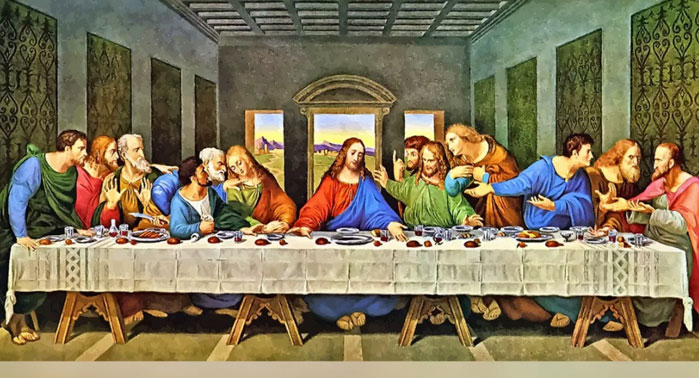
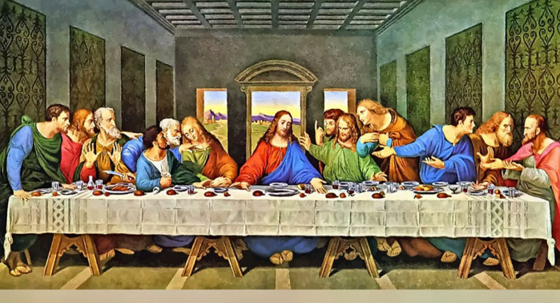
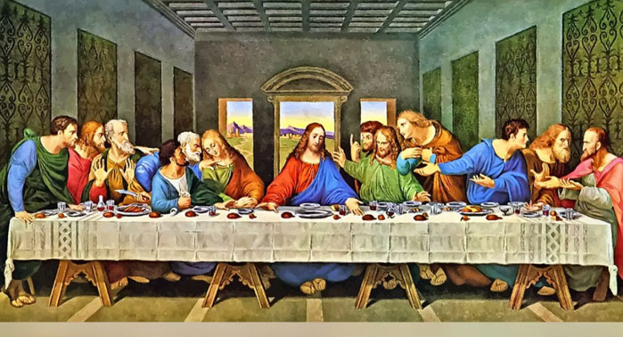
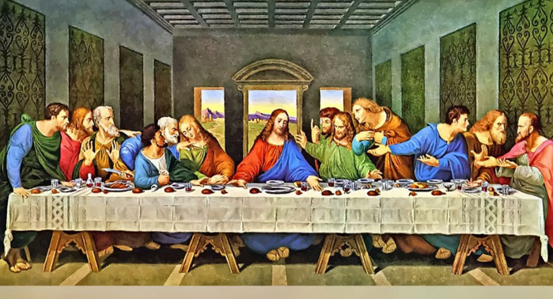

El Renacimiento fue un amplio e importante movimiento cultural producido en Europa en los siglos XV y XVII. Sirvió de transición entre el Medioevo y la Edad Moderna, trayendo consigo una profunda renovación del pensamiento, las artes y las ciencias. El Renacimiento se caracterizó por el retorno a las raíces grecolatinas clásicas de Occidente, lo cual significó una revalorización de sus mitos, sus discursos y su filosofía, luego de siglos de pensamiento dogmático religioso. Su nombre le fue otorgado en el siglo XIX, por el historiador francés Jules Michelet (1798-1874) en 1855, rescatando el término que usó por primera vez el escritor y arquitecto italiano Giorgio Vasari (1511-1574). El Renacimiento no fue un movimiento homogéneo, ni unitario, desde el punto de vista cronológico o geográfico. De hecho, surgió de manera desordenada en Europa y se transmitió luego a las recientes colonias europeas en América. Por otro lado, los cambios políticos y sociales que trajo esta época fueron de importancia en todo Occidente: el fin del pensamiento religioso medieval y del sistema feudal aristocrático, el surgimiento de las culturas burguesas y el inicio, algo después, del capitalismo. Muchos de los grandes artistas y pensadores occidentales a los que rendimos culto hoy en día formaron en su momento parte del Renacimiento, y algunas de sus obras constituyen hoy en día íconos de la cultura moderna Occidental. De alguna forma, el mundo que hoy conocemos comenzó a construirse con el Renacimiento.
Fue de suma importancia debido a que las personas se vieron obligadas a pensar, replantear, experimentar y explorar todo lo que ya conocian y querian conocer, buscar nuevas respuestas a las infinitas preguntas que rodeaban al mundo y el ser humano
Distinguimos dos etapas dentro del Renacimiento italiano, la primera denominada Quattrocento y el Cinquecento.
La filosofía renacientista estuvo marcada en su origen por el declive de la teologoia, en un mundo abocado a al modernidad que, sin renunciar aun a la religión, la circunscribe al ambito espiritual y personal del individuo.